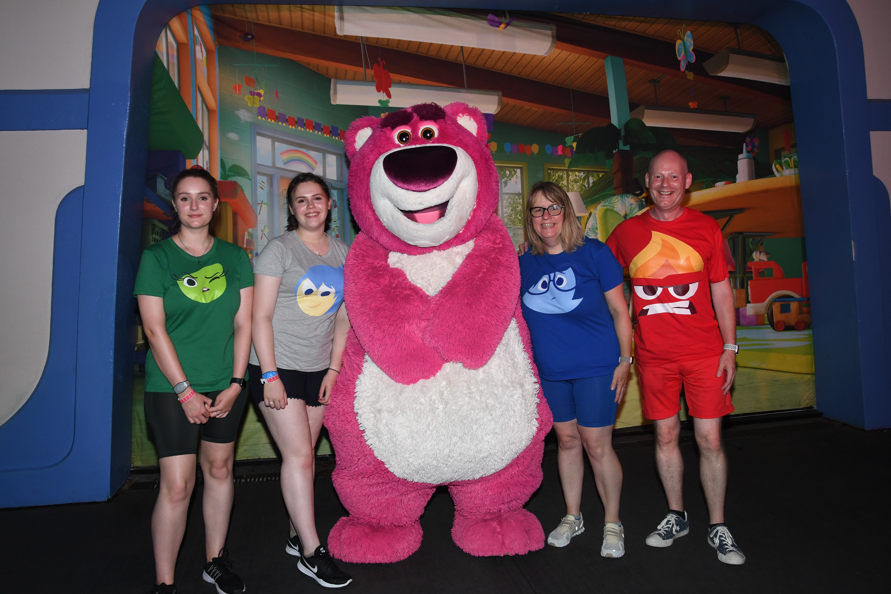
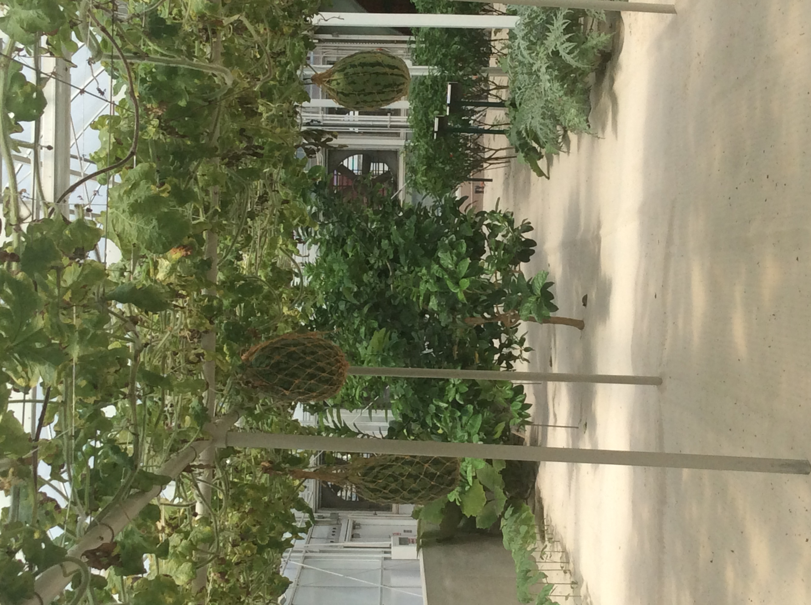
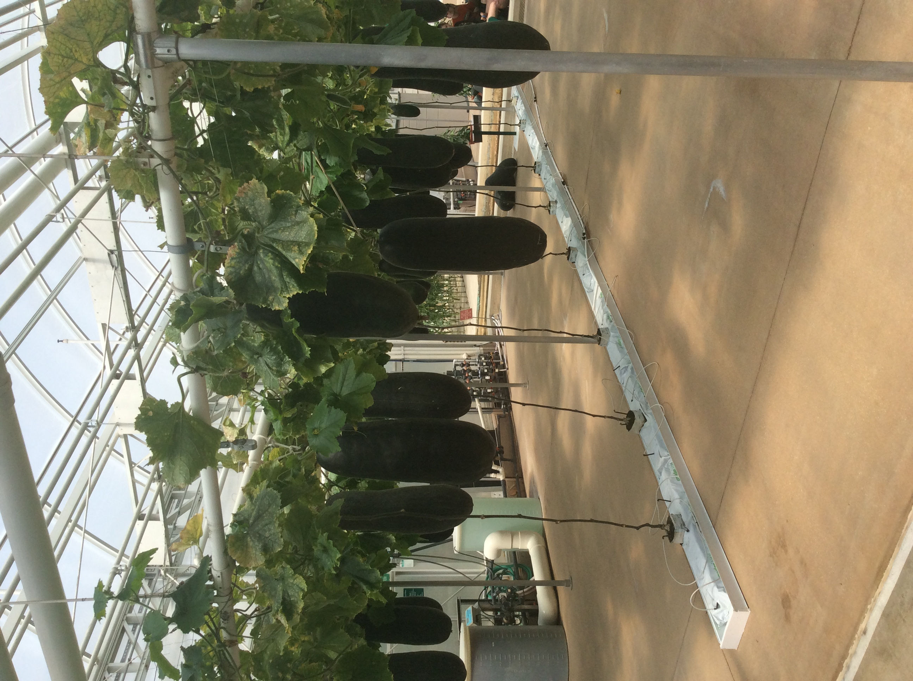
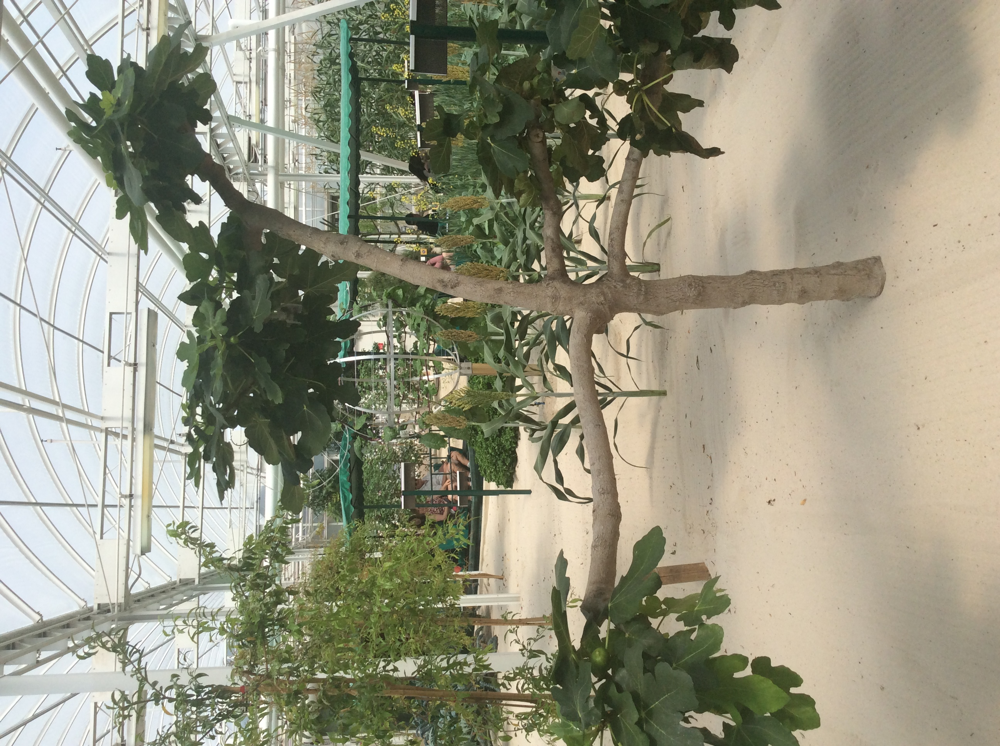
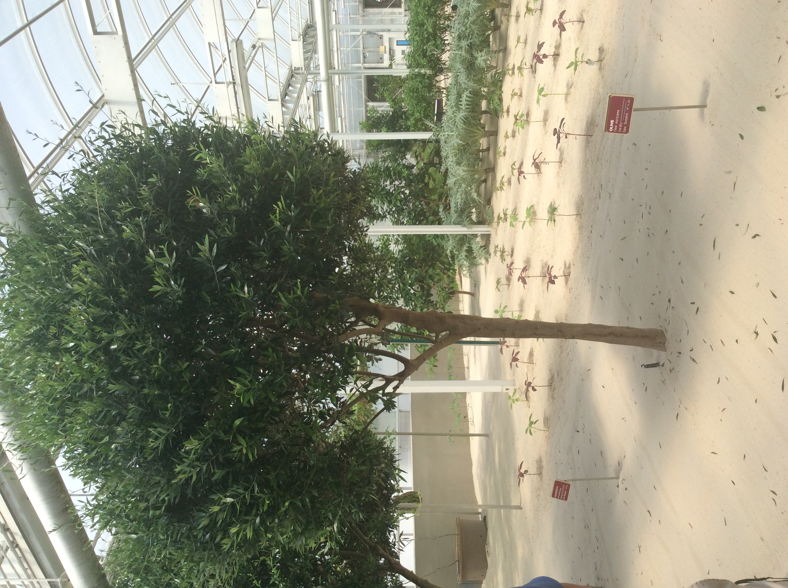
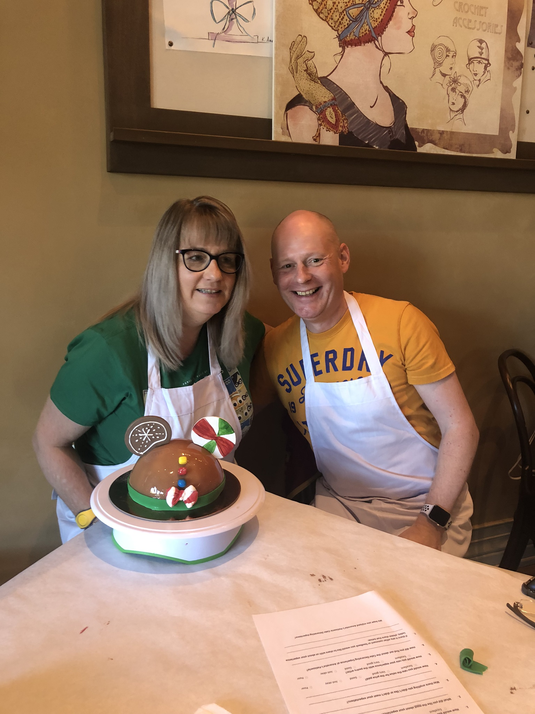

Disney has many special events and tours available to guests, some are free, some cost $1000's.
There are themed events during the year such as The Flower and Garden Festival, Festival of the Arts and the
Food and Wine Festival at Epcot. These are free to attend, but have paid for options too.
Guests are encouraged to dress up for the Mickeys not-so-scary Halloween Party - we went as the
characters from inside out!
The behind the seeds tour takes you backstage at Epcot to see where Disney grow
a lots of their produce for the onsite restaurants. This in an inexpensive walking tour costing $35.
The tour takes you through their greenhouses explaining how thwy innovate within plant production. They
have also bred lady bugs that will keep mosquitos at bay.





Cake decorating at Amorettes Patisserie in Disney Springs was one of the most fun things I have
done. You get to decorate your own Mickey Dome cake (and take it home!) You have expert guidance in how to
use the mirror glaze and how to prepare the ears etc. At $199 per person it is expensive, but worth
every penny! The experience lasts approximately 2 hours which includes a drink (mimosa or coffee) and samples of cake!
These are just a few activities. Check out the links on the left-hand side for more ideas.